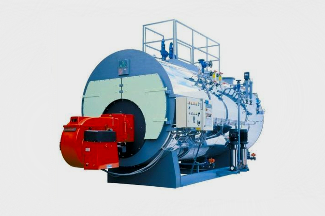

Steam boilers are an essential piece of any modern kitchen or commercial building. They are used for cooking pasta, making hot drinks and heating water. Though there are many different types of boilers, the most common one is the horizontal, water-tube boiler. The advantages of this type of boiler are that they are cheap to buy, easy to maintain, efficient and flexible.
Although steam boilers have been used for decades, they have now been replaced. These old boilers are being replaced with new models that use heat energy to turn water into steam and drive turbines that produce electricity. This innovative design solution is both more efficient and saves time and money on otherwise tedious manual labor related to the job of turning water into steam (and then back into water).
The main reason why steam boilers are more expensive than their gas counterparts is because of the increased protection needed when operating a boiler. This area, some people may have misconceptions about or choose not to research to avoid the extra costs.
Boilers are much like the appliances we use in our homes. They are essential machines that help us by heating water and heating or cooling the air in a room. There may be many different types of boilers, but they all serve specific purposes.

Steam boilers are easy to take care of and last a long time. These steam boilers normally last for about 50-70 years. We make sure that the boiler is functioning properly when it is installed by inspecting it and making sure it reaches a temperature that allows water to produce enough pressure to turn water into steam.
Getting the job done quickly is a hard task. But you can do it with Tomlinson steam boilers! Tomlinson boilers are the best in the market and it always pays to get the job done as they are the fastest in the market. With the help of Tomlinson boilers you are sure to get the job done quickly.
While there's no one-size-fit -all solution between furnaces and boilers, there are standards that home heating engineers have come to rely upon as a society. While it's important to remember not to guess what the answer is or how things work with your equipment, it is important to know and understand how each of your furnace's components work together in order for you to be able to do this simple check yourself when something goes wrong. Your boiler is one of your most important home appliances as it provides heat and hot water in your home. Although boilers may provide more safety from fire compared to furnaces; they are easily accidentally left unsafely leaking!
There is a lot to know about a steam boiler, but even after learning all about them, there is still a lot left to learn. For instance, you may be surprised to know that there are so many kinds of boilers from a boiler service, and that some take longer to heat up than others.